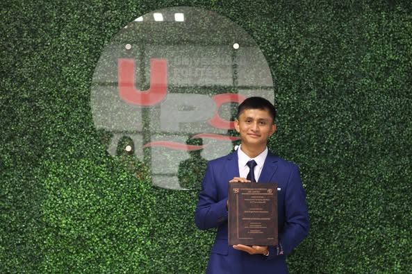

Noticias Papillón

Concurso
Estudiante de la Ing. En Geofísica Petrolera de la UPC, ha llegado a la final del concurso estatal de oratoria.
Leer másRelevante
Nuestra casa de estudios recibió la visita de la Rectora de la Universidad Politécnica de Chiapas, fortaleciendo lazos y abriendo nuevas oportunidades de colaboración.
Leer más

Relevante
Con entusiasmo, los futuros egresados de la UPC presentaron sus estadías finales en la sala “Lácides García Detjen”. ¡Un paso clave rumbo a su titulación!
Leer másConferencia
En el Día Mundial del Medio Ambiente, se realizó la conferencia Impacto de los agroquímicos en suelos de banano, impartida por el Dr. Juan Carlos Rodríguez Cabriales.
Leer másEvento